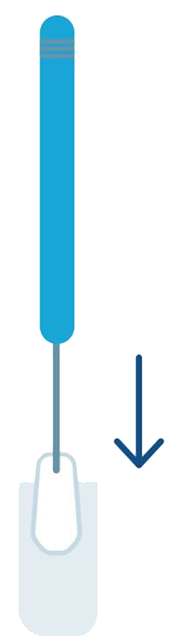

5. Autotoma para detección de VPH-AR:
Opción viable en entornos con barreras de acceso a servicios de salud.
Brinda mayor aceptabilidad en algunas poblaciones.
Debe realizarse con capacitación adecuada.

Página 7 de 12